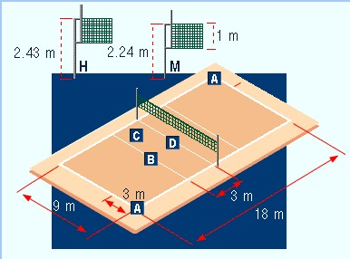
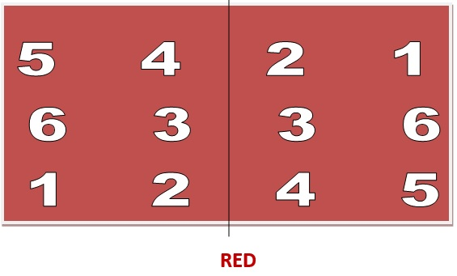

La cancha y sus medidas:
- Largo: 18 m.
- Ancho: 9 m.
- Línea de zona: a 3 m de la línea media.
- Altura de la red en su borde superior: 2,24 m para damas y 2,43 m para hombres.

Imagen tomada del portal Uruguay Educa
¿A cuánto se juega un partido?
En un partido de voleibol gana el primer equipo que acumule tres sets seguidos siempre que haya dos puntos de diferencia de lo contrario en caso de empate por ejemplo en 24 se juega a dos puntos más y así sucesivamente hasta que uno de los equipos saque dos puntos de diferencia.
En caso que ganen dos sets cada equipo se jugará para desempatar un quinto set a 15 puntos.
Jueces
Es dirigido por un primer árbitro (responsable último de todos los cobros) ubicado en un extremo de la red y cuya vista debe situarse 50 cm sobre ésta, un segundo árbitro (responsable de los toques de red abajo, invasiones, faltas de rotación, etc.) ubicado en el piso en el poste opuesto al primero, un anotador (que lleva la planilla-documento del partido) y jueces de línea (2 a 4).
¿Cuándo y cómo se consigue un punto en voley?
- La pelota pica en la cancha.
- La pelota es tocada por un jugador y se cae fuera de la cancha.
- Un saque no llega a la cancha contraria.
- Hay una falta técnica.
- A alguien le sacan una tarjeta amarilla.
Faltas técnicas:
- Un jugador toca la pelota dos veces consecutivas.
- Un jugador retiene la pelota.
- Un jugador toca la pelota en la cancha contraria (invasión sobre la red).
- Un jugador pasa a la cancha contraria un pie o más (invasión por debajo de la red).
- Un equipo realiza más de tres pases antes de enviar la pelota a la cancha contraria (el bloqueo no se cuenta como toque).
- Un equipo realiza mal la rotación.
- Un jugador no se encuentra en su zona al momento de poner la pelota en juego.
- Un saque se efectúa fuera de la zona correspondiente.
- Un jugador toca la red.
- Un zaguero remata impulsándose desde la zona de ataque.
- Un líbero saca o remata.
- Un jugador remata desde la zona de ataque una pelota armada de arriba por el líbero en esa zona.
Jugadores y cambios:
Un plantel está formado por 12 jugadores: seis titulares y hasta seis suplentes. Si por cualquier motivo un equipo queda incompleto en un set lo pierde. No se puede jugar con inferioridad numérica.
Dentro del equipo un jugador puede anotarse como líbero.
Pueden realizarse hasta seis cambios por set pudiéndose reingresar sólo por el jugador que había sido el sustituto del primero y cerrándose el movimiento de estos jugadores por ese set.
Los cambios del líbero son libres.
El líbero es un jugador que puede participar sólo de zaguero con una camiseta diferenciada pudiendo solamente defender pasar a un compañero o pasar a la cancha contraria sin atacar el balón. Sus cambios son libres.
La rotación y los lugares en la cancha
¿Cuándo se rota?
Cada vez que el equipo que no tiene el saque consigue el punto.
Al comenzar cada set los jugadores deben estar en la posición de la cancha que el entrenador entregó a la mesa como formación inicial. Además durante todo el encuentro deben permanecer en su posición transitoria hasta que la pelota se pone en juego, momento en el que se pueden hacer cambios posicionales.
La rotación es el cambio posicional de los jugadores en sentido horario que se realiza al ganar el saque. Su objetivo es que todos los jugadores puedan sacar y jugar en todas las posiciones.
Las posiciones se numeran mirando a la red: zaguero derecho 1, delantero derecho 2, delantero central 3, delantero izquierdo 4, zaguero izquierdo 5 y zaguero central 6.
